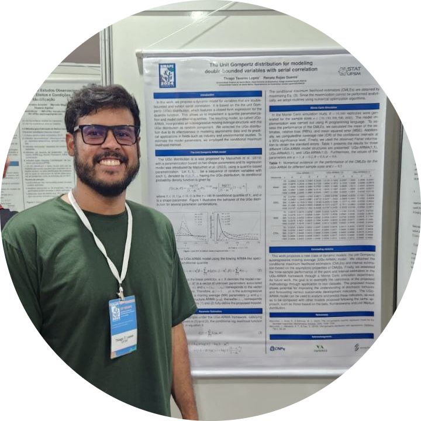

Data Scientist / Data Analyst with four years of experience in Data Analysis and Statistical Modeling, Data Wrangling and Cleaning, and statistical reporting. Extensive experience building time series models, dynamic models for forecasting, and statistical inference. Proficient in R and Python for data science applications, including data visualization, predictive modeling, and Machine learning . Led the statistical analysis for the development of a national water contamination map (Mapa da Água), mapping water quality across Brazil, and served as a statistical consultant at Sigma Jr. Statistical Consulting. Developed time series modeling projects in partnership with the Università di Pavia, Italy. Currently working as a Statistician at Brasilseg, within the Actuarial and Statistics department, responsible for developing and maintaining the department's time series forecasting models.
June 2026 – Present • São Paulo, SP
March 2024 – May 31 • Santa Maria, RS
January 2023 – January 2026 • Santa Maria, RS
January 2023 – March 2024 • Santa Maria, RS
August 2021 – January 2025 • Santa Maria, RS
This research project introduces a mixed time series model combining the ARMA structure with the Unit Gompertz distribution. The model was applied to interest rate forecasting and outperformed classical time series models. The results were published in the Brazilian Journal of Probability and Statistics. DOI: 10.1214/25-BJPS647
View Publication